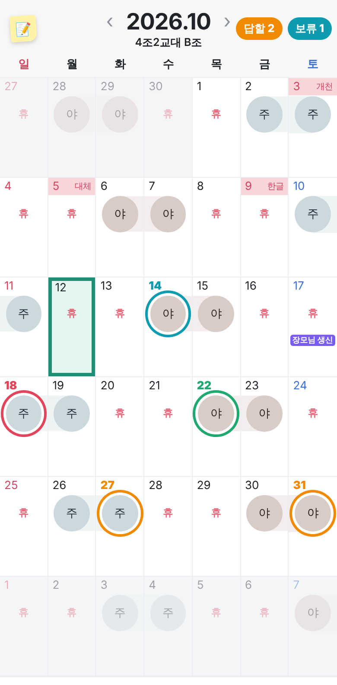

요청 상태 색 · 근무 색과 따로
링 색은 근무(주 · 야 · 휴) 색과 안 닮게, 요청 상태끼리만 구분되게 정했어요.

주
요청
· 답할 요청
27일 · 31일 · 년월 옆 "답할 2"
야
보류
· 미뤄 둔 요청
14일 · 년월 옆 "보류 1"
주
승인
· 수락한 요청
22일 · 근무표에 적용하면 링이 사라져요
휴
거절
· 거절한 요청
18일 · 확인하면 사라져요